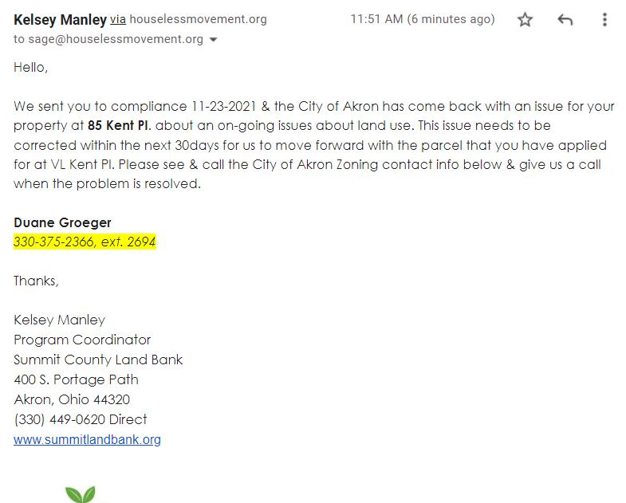

Timeline photos
I'm trying to buy the land that sits in the middle of two other pieces of land the @[112716880296603:274:Houseless Movement] owns. It's been abandoned and has thousands of dollars of back taxes on it.
Of course the city (The Land Bank does all this work) won't sell us the land because I have tents on it. But who the hell else is going to buy a piece of land that is in the middle of two pieces of land that I control? So, it will just sit there not claimed, not getting tax payments.
I could move the tents, buy the land and then put the tents back once they sell me the land. I might consider doing that in the Spring.
THIS, LADIES AND GENTLEMEN IS EXACTLY WHY THE CONSERVATIVES HATE THE GOVERNMENT. THEY ARE ABSURD.